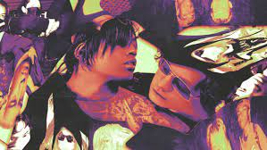
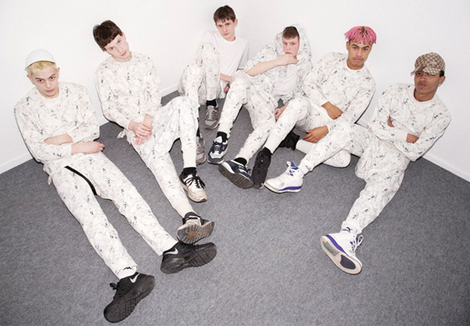

Drain Gang (formerly known as Gravity Boys Shield Gang) is a Swedish artistic collective, focusing on music and fashion, consisting of Bladee Ecco2k, Thaiboy Digital, Whitearmor and Yung Sherman, the group rose to one of the top Swedish music collectives in the mid-late 2010s. It is known for its frequent collaborations with fellow Swedish rapper Yung Lean and producer Gud.
The group formed in 2013 in Stockholm. Thaiboy Digital was residing in Sweden at the time. Bladee and Ecco2K had previously collaborated as the grindcore duo Krossad. Signing to the YEAR0001 label, the members of Drain Gang gained prominence in the cloud rap scene from their collaborations with labelmate Yung Lean.
Drain is about loss and gain; it could be good or bad — you could be drained of energy or you could drain something to gain energy. There’s financial, emotional and physical drains, for example — you could just be draining your bank account at the store. It doesn’t have to be deep. Basically, if I’m talking about ‘eating the night’ that means I drain it for its essence. Everything me and my bros do is connected to that concept — we might drain some blood for good fortune.